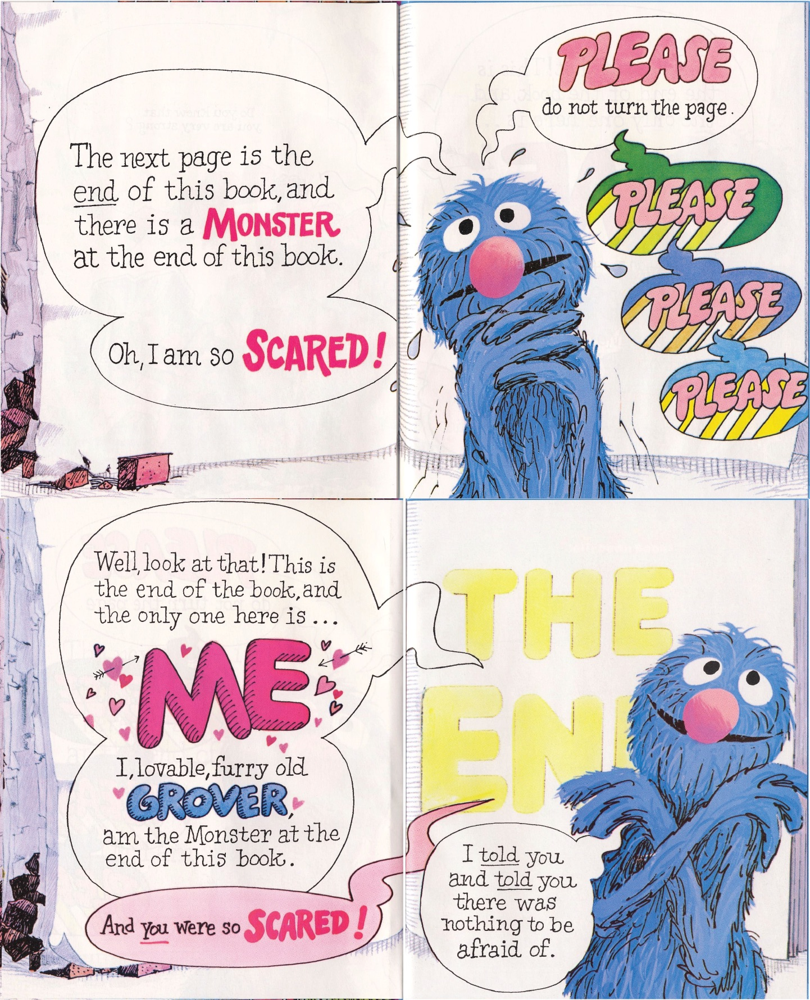

I, lovable, furry old Grover, am the Monster at the end of this book.
These are experiments in breaking. Each page models something — a reasoning strategy, a physical system, a logical typology — and each is designed to be pushed until the model stops working. That stopping point is not incidental. The central argument of the accompanying manuscript is that formalisms productively exceed themselves when applied consistently: the breakdown is where the interesting philosophy begins. (Savich, unpublished; cf. Brandom, 2019, Ch. 2)
Source
The claim that formalisms "productively exceed themselves" is the central thesis of Savich's unpublished manuscript UMEDCTA. The philosophical precedent is Brandom's reading of Hegel's Introduction to the Phenomenology, where error is not failure but the mechanism by which consciousness becomes more determinate: "to be conceptually contentful is to stand in relations of material incompatibility ('determinate negation') and material consequence ('mediation') to other such contentful items" (Brandom, 2019, Ch. 2, "Representation and the Experience of Error").
The modeling is honest about what it leaves out. A Prolog formalization of a child's arithmetic strategy is not a theory of mathematical cognition; a Zeeman catastrophe machine running in a browser is not a metaphysics of embodied compression. What these tools do: make it possible to notice where the formalization stops — and what that stopping tells you about what the formalism was actually doing.
Grover spends the whole book terrified of the monster at the end. He builds walls, begs you to stop turning pages. The monster turns out to be him. The fear was never about the monster — it was about the gap between the I who acts and the me who is recognized by others. That gap is where misrecognition lives: when who you are for yourself finds no reflection in who you are for the people around you. Grover's recognition does not happen alone. It requires the reader — you, turning the page over his protests — as a co-constitutor of what he discovers about himself. These tools ask you to do something similar.
The tools accompany a manuscript rooted in Robert Brandom's analytic pragmatism (Brandom, 2000), Hegel's dialectics of determinate negation (Brandom, 2019, Ch. 5), and Phil Carspecken's critical ethnography (Carspecken, 1995). The Prolog and Python formalization work is not included here; that material is research in progress, and claiming it "works" in any philosophically significant sense would be premature.
The tools below are arranged roughly in developmental order — from embodied judgment, through counting and number, to the geometry of difference and the structure of classroom discourse. The paradoxes encountered along the way are the "built to break" moments.
Embodiment and Memory
Sources
The catastrophe machine is due to Zeeman (1976). The specific mathematical formulation follows Poston & Stewart (2012). The matrix performs Cantor's 1891 diagonal operation using Cantor's original characters, m and w: each new row negates the diagonal of the existing matrix. In Cantor's proof, this demonstrates that any enumeration of infinite binary sequences is necessarily incomplete. Here, the same operation is applied to a finite, embodied machine — the proof becomes a process of self-reflection generating novelty, not a static demonstration of uncountability. The manuscript's Bridge chapter, "A Foundational Star," connects this to Dr. Seuss's Sneetches: McMonkey McBean's Star-On/Star-Off machine performs the same flipping operation, churning the Sneetches through until the rigid categories dissolve into the sublated recognition that "Sneetches are Sneetches" (Savich, unpublished, UMEDCTA, Bridge chapter).
Each snap is an act of counting — continuous experience compressed into a discrete judgment. When a child counts "one, two, three," each number is the same catastrophe at a different scale. And when "many ones" suddenly reorganize into "one ten," that is sublation. From here, counting.
Counting and Number
Sources
The modeling of children's arithmetic strategies as formal automata is developed in Savich (unpublished, UMEDCTA). The strategies themselves draw on the Cognitively Guided Instruction tradition (Carpenter, Fennema, Franke, Levi, & Empson, 2015). The description of counting as normatively committed follows from Brandom's account of concept use as the undertaking of inferential commitments (Brandom, 1994, Ch. 3).
Counting and shapes share a problem: how do things differ, and what follows from their difference?
Difference and Identity
Sources
Brandom's analysis of the Perception chapter appears in A Spirit of Trust, Chapter 5: "Understanding the Object/Property Structure in Terms of Negation" (Brandom, 2019). The key Hegelian concepts at work — determinateness, negation, mediation, and universality — follow the Spinozist principle Omnis determinatio est negatio (all determination is negation): "being determinate requires some limitation, contrast, or exclusion" (Brandom, 2019, Ch. 5). The substitution inference argument is from Articulating Reasons, Chapter 4 (Brandom, 2000).
Relaxing the strict negations that define a square does not destroy it — the concept deforms into neighboring predicates (rectangle, rhombus), carrying its developmental history within it. That geometric sublation is the same structure that lets a teacher connect one student's thinking to another's.
The Classroom
Making those connections explicit at scale is the problem AI enters. The question is what kind of action it performs.
AI and Education
Sources
The strategic/communicative distinction is from Habermas, Postmetaphysical Thinking, Ch. 4, Section III: "Speech Acts, Communicative Action, and Strategic Interaction" (Habermas, 1992). Habermas distinguishes types of interaction by "whether the actions of different actors are coordinated by way of 'reaching an understanding' or 'exerting influence'" (Habermas, 1992, Ch. 4). The fuller development of communicative action theory appears in The Theory of Communicative Action, Vol. 1 (Habermas, 1984).
The connection between friction and the "experience of error" draws on Brandom's Chapter 2 of A Spirit of Trust, "Representation and the Experience of Error," where error is the mechanism by which consciousness becomes more determinate — not a deficiency but a constitutive feature of knowledge (Brandom, 2019).
On the Use of Generative AI
In the interest of transparency consistent with the IU School of Education Generative AI Framework (IU SoE AI Guidance Committee, 2025), this portfolio was built by Savich with substantial assistance from generative AI (Claude Opus 4.6 via GitHub Copilot; in some cases Google Gemini). The ideas, philosophical framework, and editorial judgment are Savich's; approximately 90% of the specific sentences were generated through conversation with AI systems. This is disclosed in detail on the framework page.
From Savich's developing framework on AI in education (unpublished), this use case is strategic (Mode 1). Habermas's strategic action is interaction oriented purely toward success, where an actor seeks to influence others, treating them as means to an end. The point of building a portfolio is to be hired. Such uses are existentially fraught. They risk readers sensing manipulation and the purported author being misrecognized as more (or less) capable than they are.
Habermas on strategic and communicative uses of language
The use of language that is manifestly strategic has a derivative status as well; in this case all participants are aware that reaching understanding in language is subordinated to conditions of strategic action — and therefore remains deficient. They know and reckon with the fact that they must supplement the illocutionarily mediated perlocutionary effects of their speech acts with purposively triggered empirical effects. That is, in the end they still rely upon indirect communication: only the proverbial shot before the bow is able to demonstrate the seriousness of a threat to the opponent. This case of the manifestly strategic use of language is to be distinguished in turn from cases of an indirect communication that remains subordinated to the aim of communicative action. In unstructured initial situations, the common definition of the situation is first constructed (for example, in an accidental meeting in a bar) when a young man indirectly implies something to a young woman. In the same way, the pedagogically careful teacher instills self-confidence in his pupil through compliments, so that the pupil learns to take his own ideas seriously. In cases such as these, in which communicative action has first of all to establish its own presuppositions step by step, the terminus ad quern is an agreement that is ultimately also available for communication and not a perlocutionary effect that would be destroyed by being admitted or declared.
Habermas, Postmetaphysical Thinking, Ch. 4, trans. Hohengarten (Polity, 1992), p. 106 (ebook)
Generative AI is, at this moment of technical development, intrinsically manipulative in Habermas's sense. Its architecture uses transducing automata (stimulus/response) to link inputs, responses, and rewards in ways that mimic communicative action — but without the ability to raise or redeem validity claims. In actions oriented toward mutual understanding, actors' communicative acts function as promises to one another. Those promises hold existential and embodied stakes. Without the ability to enact regret — the real-time doxastic updating that happens when you notice your words did not land — the machines generate text fluidly, with no fear of being misunderstood.
With no socially inhibitory mechanisms, the interactions between a human and an AI tool can function as narcissistic pools: the author perceives themselves reflected as fearless and fluent. The invulnerable image risks AI users falling into its depths, a process now named AI-induced psychosis. When others read those communiques, they may sense the psychosis, feel the manipulation, or recognize the apparent depth as the shallow puddle of the LLM's context window.
The contradictions these uses enact are deeply problematic. However, Hegelian theorists may recognize such contradictions as potential sites for dialectical growth. Whether the tendencies of AI use to isolate, drive to psychosis, disintegrate the productive friction we call "curricula," and dissolve the promissory notes that bind people in recognitive communities can be sublated — that is the research question this work attempts to hold open rather than resolve.
References
- [Brandom, 1994] Brandom, R. B. (1994). Making It Explicit: Reasoning, Representing, and Discursive Commitment. Harvard University Press.
- [Brandom, 2000] Brandom, R. B. (2000). Articulating Reasons: An Introduction to Inferentialism. Harvard University Press.
- [Brandom, 2019] Brandom, R. B. (2019). A Spirit of Trust: A Reading of Hegel's Phenomenology. The Belknap Press of Harvard University Press.
- [Carpenter et al., 2015] Carpenter, T. P., Fennema, E., Franke, M. L., Levi, L., & Empson, S. B. (2015). Children's Mathematics: Cognitively Guided Instruction (2nd ed.). Heinemann/NCTM.
- [Carspecken, 1995] Carspecken, P. F. (1995). Critical Ethnography in Educational Research: A Theoretical and Practical Guide. Routledge.
- [Habermas, 1984] Habermas, J. (1984). The Theory of Communicative Action, Volume 1: Reason and the Rationalization of Society. Trans. T. McCarthy. Beacon Press.
- [Habermas, 1992] Habermas, J. (1992). Postmetaphysical Thinking: Philosophical Essays. Trans. W. M. Hohengarten. Polity Press. [Originally published 1988 as Nachmetaphysisches Denken.]
- [Poston & Stewart, 2012] Poston, T. & Stewart, I. (2012). Catastrophe Theory and Its Applications. Dover Publications.
- [Savich, unpublished] Savich, T. M. (unpublished). Understanding Mathematics as an Emancipatory Discipline: A Critical Theory Approach. Manuscript in preparation.
- [Smith et al., 2019] Smith, M. S., Bill, V., & Sherin, M. G. (2019). The Five Practices in Practice [Elementary]: Successfully Orchestrating Mathematics Discussions in Your Elementary Classroom. Corwin.
- [Zeeman, 1976] Zeeman, E. C. (1976). Catastrophe theory. Scientific American, 234(4), 65–83.